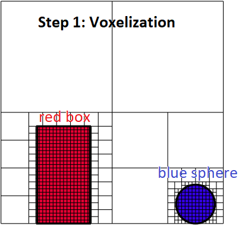

By [Jensen 1996] and "16.2.2 Photon Mapping" of PBRT-V3, the photon mapping is composed of two-pass: the photon pass and the rendering pass. In the first pass (photon pass), the paths are traced from the light sources and the lighting of the interaction points on the surface are recorded as the photons. In the second pass (rendering pass), the paths are traced from the camera and the nearby photons of the interaction points are used to estimate the lighting.
By "Progressive Photon Mapping" of PBRT-V3, the approach, that only the interaction points after the diffuse bounce are recorded as the photons in the photon pass, is also called the final gathering.

By [Crassin 2011 B], the idea of VXGI is to use the voxel cone tracing to perform the final gathering. The VXGI is composed of three pass: light injection pass, filtering pass and voxel cone tracing pass. In the first pass (light injection pass), the photons are organized in the voxels. In the second pass (filtering pass), TODO. In the third pass (voxel cone tracing pass), the voxel cone tracing is used to perform the final gathering.

[Jensen 1996] Henrik Wann Jensen.
"Global Illumination using Photon Maps." EGSR 1996.
[Crassin 2011 A] Cyril Crassin. "GigaVoxels: A
Voxel-Based Rendering Pipeline For Efficient Exploration Of Large And Detailed Scenes." PhD Thesis
2011.
[Crassin 2011 B] Cyril
Crassin, Fabrice Neyret, Miguel Sainz, Simon Green, Elmar Eisemann. "Interactive Indirect Illumination
Using Voxel Cone Tracing." SIGGRAPH 2011.